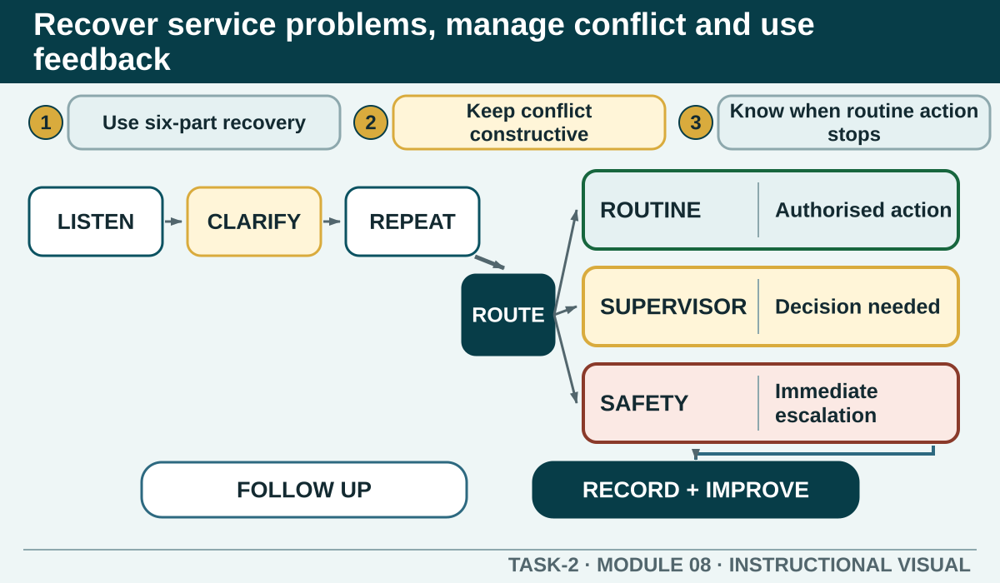

Recover service problems, manage conflict and use feedback
Use a calm recovery process for routine problems, recognise escalation limits and turn useful feedback into a documented improvement action.
Learning intention
What success looks like
Use listen, clarify, repeat, authorised solution or escalation, appropriate apology and follow-up for a routine service problem.
Distinguish constructive recovery from defensive or destructive conflict behaviour.
Identify threats, serious safety concerns, discrimination allegations or authority limits that require escalation.
Gather, record and use focused feedback without adding blame or unnecessary personal information.
Core ideas
Build the complete picture
1
A six-part routine recovery sequence
2
Constructive and destructive conflict
3
Know when routine recovery must stop
4
Focused feedback is more useful than a vague check
Visual explanation
Recover service problems, manage conflict and use feedback

Help students distinguish routine recovery, authority escalation and immediate safety escalation while keeping the six recovery steps visible.
Worked example
Worked case: delay, cold food and an undercooked burger
Listen and acknowledge the reported problems. Clarify which product is affected and ensure the food-safety concern is passed through the authorised procedure. Involve the authorised person, explain the confirmed next step, record what occurred and follow up. Any replacement, refund, discount or compensation depends on current authority.
The authorised feedback worksheet includes a customer reporting an hour-long wait, cold food and a burger that is raw in the middle. This combines service quality and a potential food-safety concern. The immediate priority is not to debate the exact wait or offer compensation outside authority.
Question the room
A customer says their meal is wrong and they are visibly upset. What should happen first?
Listen without interrupting, clarify the problem and acknowledge the concern.
Explain that the venue is busy.
Tell them the docket says the meal is correct.
Apply
Service recovery decision path
A customer says: 'We ordered twenty minutes ago and one meal is still missing. No one has told us what is happening.' The learner can investigate and communicate but cannot offer refunds or promises outside the venue's authority.
Complete the four decision points.
Practise the response in pairs.
Record the fact, action, result and improvement without blaming a person.
Exit ticket
Action · evidence · next step
Respond to the fictional complaint: 'We waited a long time, the food arrived cold and this burger appears undercooked.' Explain the immediate response, safety escalation, authority limit, follow-up question and improvement record.
One action I would take
The evidence I would check
The person or source I would confirm with
My next improvement
1 of 8
Speaker notes and delivery prompts
Open with this purpose: Use a calm recovery process for routine problems, recognise escalation limits and turn useful feedback into a documented improvement action.
Use A six-part routine recovery sequence to connect prior learning to the first observable workplace decision.
Model Worked case: delay, cold food and an undercooked burger by walking through this supplied example: The authorised feedback worksheet includes a customer reporting an hour-long wait, cold food and a burger that is raw in the middle. This combines service quality and a potential food-safety concern. The immediate priority is not to debate the exact wait or offer compensation outside authority.
Ask: A customer says their meal is wrong and they are visibly upset. What should happen first? Confirm the strongest response as Listen without interrupting, clarify the problem and acknowledge the concern..
Listen for this misconception: Explaining pressure before listening can sound defensive and does not clarify the problem.
Move into Service recovery decision path, then collect the saved response and finish with the source boundary: Authorised source note: Grounded in T2-S07, T2-S08, T2-S09, the complaint-policy content in T2-S01 and the v2 recovery and feedback sections in T2-S10. Local emergency, refund, replacement and compensation procedures remain Teacher to confirm.